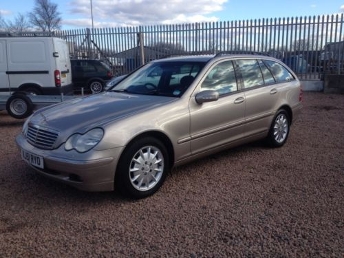
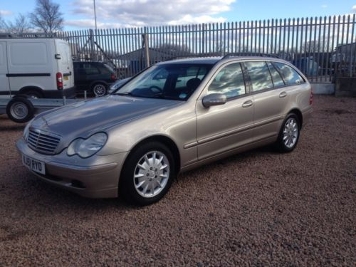

Hobbies & Interests
In my spare time I play the bagpipes and have been doing so
for nine years. Currently I am playing with the Buchan pipeband in grade 2, 2016 is my first year playing with
Buchan pipeband. This is a picture that was taken at the quartets competition at Gordon schools in Huntly, earlier this year.
Prior to joining Buchan pipebane I played for Deeside Caledonia pipebane in Aberdeen for four years,
also in grade 2.
 

When I'm not playing bagpipes I like to help out at my uncles
garage fixing his computer system and help fix cars.
I have also helped my dad restore an old mercedes that required
us having to replace the water pump, timing gears, idler pulley, serpentine belts, set the timing, and fix all of the
rusted body work. This is a picture of the car once we had finished.